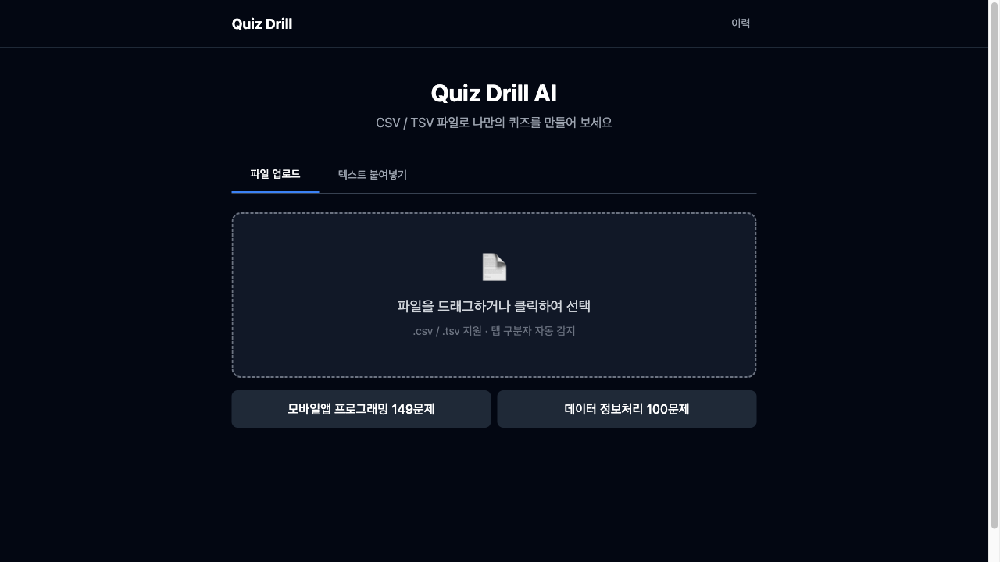
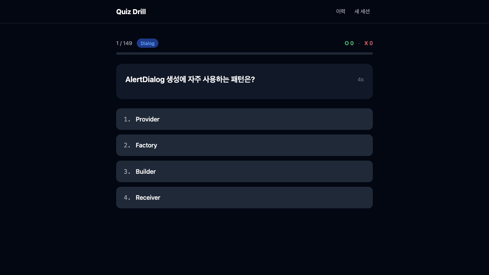
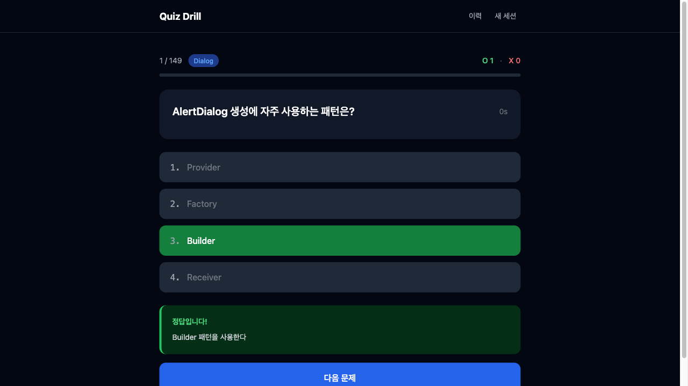
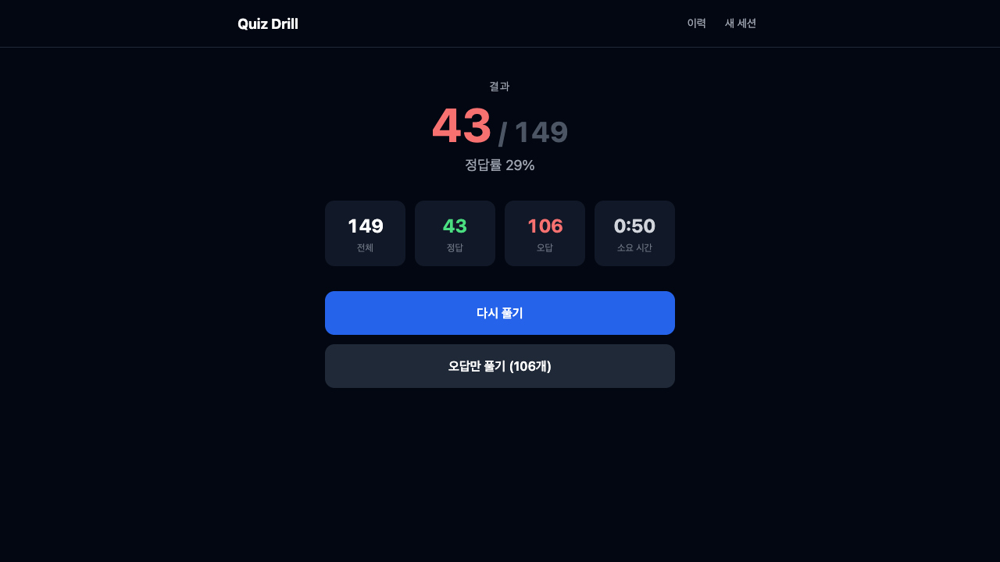
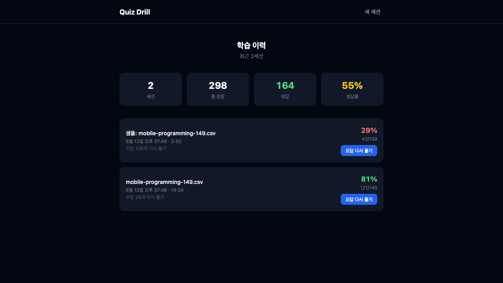

기억과 습관 — 학습 이력 저장, 누적 통계, 키보드 단축키, Vercel 배포
2026-06-13 완료 보고 · PM
학습 이력 저장, 누적 통계, 키보드 단축키, Vercel 배포로 실사용 가능한 학습 도구로 완성한다 — 반복 학습과 오답 재도전이 습관이 될 수 있도록.
| # | 결정 내용 | 담당 | 결과 |
|---|---|---|---|
| OQ-1 |
LocalStorage 최근 50세션 유지, 초과 시 자동 삭제 오래된 세션부터 순차 제거 — 용량 제한 내 안정적 유지 |
FE | 확정 |
| OQ-2 |
문제별 소요 시간 — 퀴즈 카드 내부 인라인 표시 별도 패널 없이 카드 내부에서 실시간 초 단위 카운트 |
FE | 확정 |
| OQ-3 |
Vercel apps/quiz-drill-ai 독립 프로젝트, rootDirectory 설정 monorepo 내 앱 단위 독립 배포 — vercel.json으로 rootDirectory 지정 |
FE | 확정 |





이력 · 통계
UX · 퀴즈 강화
CSV 확장 · 배포
이월 항목
리스크
Sprint quiz-drill-ai / 2